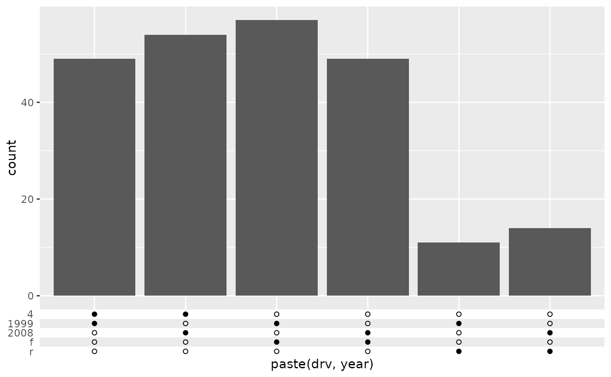
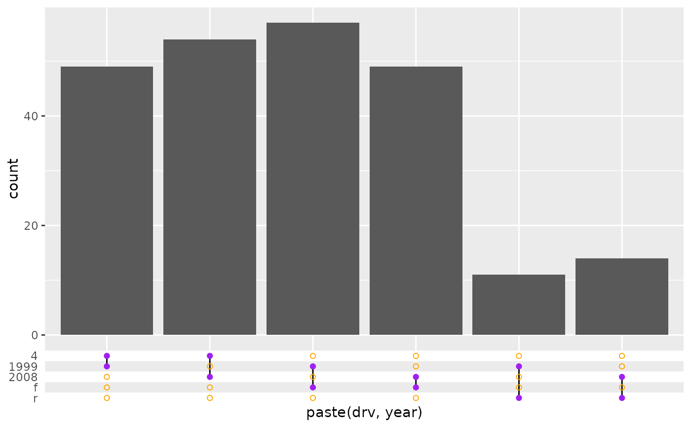
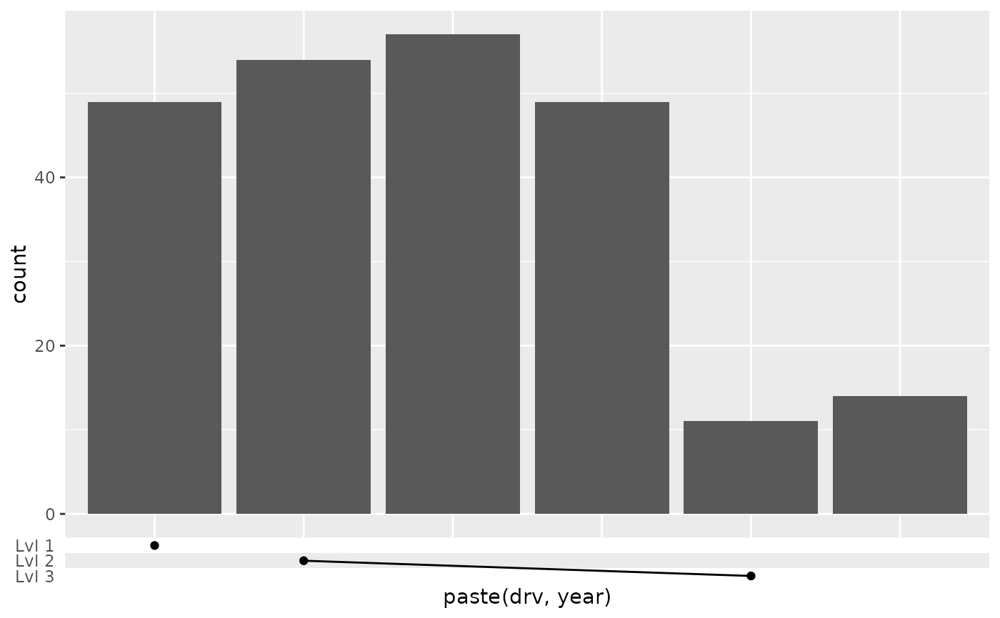

![[Experimental]](figures/lifecycle-experimental.svg)
These axis guides can be used for set annotations of discrete categories. The upset guide displays set intersections in matrix and is can be used to replace Venn/Euler diagrams. The symbol guide also displays a matrix of symbols, but requires manually specifying them.
Usage
guide_axis_symbols(
key = NULL,
connect = NULL,
title = waiver(),
theme = NULL,
override.aes = list(),
position = waiver(),
direction = NULL,
call = NULL
)
guide_axis_upset(
key = "upset",
connect = "perpendicular",
title = waiver(),
theme = NULL,
override.aes = list(),
position = waiver(),
direction = NULL,
call = NULL
)Arguments
- key
One of the following:
An upset key specification. For
guide_axis_upset, specifying a<character[n]>is also passed to thekey_upset(order)argument. An exception is made when the string is a valid key specification.A symbol key specification.
- connect
One of the following:
A
<data.frame>containing the following columns:value_start,value_endScale break values or<numeric[n]>values connecting along the axis.level_start,level_endmust be<integer[n]>values connecting perpendicular to the axis.(Optional) columns for graphical parameters:
colour,linewidthandlinetype.
A
<character[1]>keyword for upset guides or logical symbols:"perpendicular": connectTRUEsymbols (set membership for upset) perpendicular to the axis."parallel": connectTRUEsymbols parallel to the axis. This is not appropriate for upset guides.
- title
One of the following to indicate the title of the guide:
- theme
A
<theme>object to style the guide individually or differently from the plot's theme settings. Thethemeargument in the guide overrides and is combined with the plot's theme.- override.aes
A named
<list>specifying graphical properties of points to apply to symbols. Every element must either be length 1 or match the number of symbols determined by the key. 3 symbols are used in upset guides or for logical symbolism. Otherwise the number of unique values to thekey_symbols(symbol)argument determines the number of symbols.- position
A
<character[1]>giving the location of the guide. Can be one of"top","bottom","left"or"right".- direction
A
<character[1]>indicating the direction of the guide. Can be on of"horizontal"or"vertical".- call
A call to display in messages.
Details
The upset axis does not predetermine the order the categories. If any sorting based on set size needs to occur, the scale is the correct tool to handle this task.
Styling options
Several styling options are provided in the theme, while individualised styling is discussed below the table.
| Theme setting | Type | Description |
legendry.axis.subtitle | element_text() | Titles on the side labelling levels. |
legendry.axis.subtitle.position | <character[1]> | One of "top", "right", "bottom" or "left". |
legendry.zebra.light | element_rect() | Row shading. |
legendry.zebra.dark | element_rect() | Alternate row shading. |
legendry.table.spacing | rel()/unit() | Padding between levels. |
legendry.point | element_point() | Styling of the symbols |
legendry.connector | element_line() Drawing the connect lines. |
Moreover, styling options per group of symbols can be set via the
override.aes argument. These override theme settings.
Styling options per symbol can be set in key_symbols() via the ...
argument. These override theme settings and 'per group' settings.
Styling options per line in line connectors can be set by including
graphical parameters as columns in the connect = <data.frame> argument.
These override theme settings.
The context-agnostic alternative to using theme() is to use
theme_guide():
guide_axis_symbols(theme = theme_guide(
subtitle = element_line(),
subtitle.position = "left",
zebra.light = element_rect(),
zebra.dark = element_rect(),
table.spacing = unit(5, "mm"),
point = element_point(),
connector = element_line()
))Examples
# Example plot
p <- ggplot(mpg, aes(paste(drv, year))) +
geom_bar()
# A standard upset axis might not have right order of levels
p + guides(x = "axis_upset")
# The levels can be manually adjusted to taste
p + guides(x = guide_axis_upset(c("1999", "2008", "4", "f", "r")))
# The connections can be turned off to just show symbols
p + guides(x = guide_axis_upset(connect = NULL))

# The style can be changed per group of symbols.
# We need to give 3 colours to also cover NA-breaks
p + guides(x = guide_axis_upset(
override.aes = list(colour = c("purple", "orange", NA))
))

# For symbol guides you have to manually specify where you want symbols and
# connection lines appear.
p + guides(x = guide_axis_symbols(
key_symbols(
aesthetic = c("4 1999", "4 2008", "r 1999"),
level = c("Lvl 1", "Lvl 2", "Lvl 3")
),
connect = data.frame(
value_start = "4 2008", value_end = "r 1999",
level_start = 2, level_end = 3
)
))
